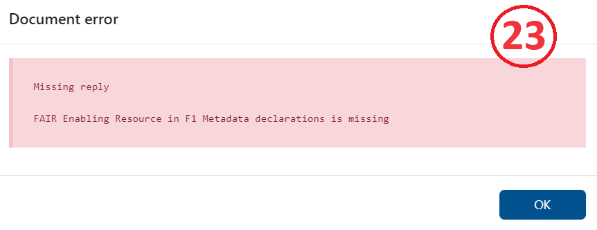

FIP Wizard User Guide
Background
A FAIR Implementation Profile (FIP) is a list of declared technology choices, also referred to as FAIR Enabling Resources (FERs), that are intended to implement one or more of the FAIR Guiding Principles, made as a collective decision by the members of a particular community of practice. These guidelines provide a practical, “how to” overview for researchers and data stewards who wish to create a FIP using the FIP Wizard 4.0. For general background on the FIP, see Schultes et al. (2020).
The FIP Wizard 4.0 tool is based on the same technology as the familiar Data Stewardship Wizard. Essentially, we have replaced the Knowledge Model that guides the creation of a data stewardship plan, with a Knowledge Model based on the FIP Questionnaire that guides the user in the creation of a FIP. We have also added the capability for the FIP Wizard 4.0 to use (consume and produce) nanopublications, allowing the various elements of the FIP to be captured in this highly modular, referenceable, machine-interpretable format. Making use of nanopublications and the FIP Ontology, the FIP Wizard 4.0 captures FIPs that are themselves, to a very high degree, FAIR.
Hence, this user guide is designed to complement the FIP-specific features of the Wizard environment. Details on more generic features of the Wizard (e.g., how to create, save, version projects) can be found in the DSW User Guide.
Why FIPs anyways?
A FIP can be compiled to declare both the current and the future use of FERs in a community.
A FIP can be compiled to declare specifically the current status of implementations within a community (called the AS-IS FIPs).
A FIP can be compiled to decide on the future use of FERs in a community (called the TO-BE FIPs). These FIPs can be used to document technology trends in FAIR.
A FAIR Implementation Community (FIC) might want to create a Reference FIP (R-FIP) to list all FERs that it recommends to use.
It is likely that any given FIP will need periodic revision. In this case, each new version documents improvements in FAIR over time.
Any given FIP can be compared with FIPs from other communities giving insight on how FIPs might be optimized to ensure FAIR Convergence.
The FIP Wizard team is composed of Barbara Magagna, Marek Suchanek, Tobias Kuhn, and Erik Schultes. We wish you success in composing your FIP. If you have any comments, questions or suggestions on how to improve the FIP Wizard experience, please contact us: fipadmin@gofair.foundation.
Overview on how to create a FAIR Implementation Profile
The FIP Wizard 4.0 is by now a stable and robust tool. However, as the FIP Wizard generates and relies on information that is open to the community at large, it requires some expert guidance in its use in order to ensure the quality of the output. This means that anyone who wishes to create a FIP should first participate in a FIP Introduction workshop conducted by a GFF-qualified 3PFF facilitator. A major responsibility of the 3PFF facilitator is to curate newly created FERs to ensure the list of resources is uncluttered by duplicates or erroneous and useless nanopublications. If you are interested in GFF qualification as a 3PFF facilitator, please email fipadmin@gofair.foundation.
Making a FIP will typically involve three activities summarized below. The numbered chapters of this user guide will provide all the details you need to operate the FIP Wizard responsibly and with confidence.
Completing the FIP Ǫuestionnaire: Answer the questions of the FIP Wizard questionnaire by selecting for each FAIR Principle, the FAIR Enabling Resources from the drop-down lists, setting the implementation status, and stating your considerations behind that choice. Go to Getting started and Completing the FIP!
Creating New Nanopublications: When declaring your community as a FAIR Implementation Community (FIC) or when selecting FERs keep in mind that:
- Other communities may have provided answers that in some cases are not yet curated by experts (those that have been checked are marked with a GFF badge).
- When the FICs and FERs you are looking for can not be found in the drop-down lists, you’ll have to create new FICs and FERs as nanopublications (go to Creating nanopublications).
A few notes:
- Many resources might be already described in FAIRsharing, in which case you should reuse the metadata recorded in there.
- Typically, FERs of type Metadata-data-linking-mechanism (F3), Communication-protocol (A1.1), Authentication & Authorization Techniques (A1.2), a Knowledge-representation-language (I1) or Usage-license (R1.1) need to be described from scratch. This is true as well for “new” resources and “resources in development”.
- Creating new FERs with good metadata as nanopubs requires a deep understanding about the resource and the FER types to which it is assigned.
FIP Publication: The FIP Wizard (the FIP Ǫuestionnaire and its drop-down lists and nanopublication features) can be seen as an editing tool, assisting you in the creation of your FIP. During the creation process and after you have completed your FIP, you can always search for your FIP within the “Project” list of the FIP Wizard, and view and revise it as you like. However, to make a definitive FIP that will be recognized by the community (including machines), you must also publish your FIP. This can also be done from the FIP Wizard, and involves a two-step process where you must first compile the list of nanopublications as a single document (a trig file) and then submit this list to the FIP server (see Publishing your FIP).
Getting started with the FIP Wizard 4.0
- Go to https://fip.fair-wizard.com/: log in or sign up.
- Click Projects (a folder icon in the menu bar on the left) (1).

- You will see a long list of projects on the right (2). FIPs are projects in the FIP Wizard and are normally named by the community that composed them.

- You can create FIPs either from scratch or by cloning an existing FIP, and revising it.
Clone and adapt the FIP project - By default, you can see only projects you created. To see all projects click on the button where you can see your name and click ‘Clear selection’ (3).

Locate your reference FIP in the list.
If the FIP has an orange annotation ‘update available’ click on the three dots on the right (4).
- Select Create Migration, click create and resolve all. This will update your project with the newest Knowledge Model.
- Then click again on the three dots and select Clone (5).
- This will bring you to the FIP questionnaire. To change the name of the FIP you need to go to Settings (6). You can now start to work with the FIP Wizard questionnaire, and modify the previous FIP declarations (see below).

Make a new FIP
Click Create (blue button on the top menu bar) (7).
You’ll see Create Project - this dialog box will launch your new FIP (8).

Select the tab: From Project Template
Enter a name for your FIP: We recommend [Community acronym] FIP (for better findability avoid using ‘_’ in the name)
Add a short description of the FIP
Select the FIP template from the drop-down list You’ll see here 4 templates
FAIR Implementation Profile (FIP)
A FAIR Implementation Community (FIC)
A FAIR Enabling Resource from FAIRsharing
A FAIR Enabling Resource (FER)
Click Save. This will bring you to the FIP questionnaire. You can now start to work with the FIP Wizard questionnaire, and make FIP declarations (see below).
Principally there should be one and only one person who acts as a data steward for the community and enters all answers. However, in most cases the answers will need to be agreed upon by an expert team of that community. By clicking on the Share button on the top right you can provide editing or viewing rights for your colleagues (9).
Completing the FIP questionnaire
The FIP questionnaire has 29 questions (referred to in the FIP ontology as “declarations”), divided among 7 chapters.
I. About
II. Declare your FAIR Implementation Community
III. Declarations for Findability
IV. Declarations for Accessibility
V. Declarations for Interoperability
VI. Declarations for Reusability
VII. Register a new resource as a nanopublication
On the left, the FIP Wizard displays a questionnaire navigation tool, indicating the chapters and the number of questions that still need to be answered for each chapter (10).
If you click on any chapter in the navigation tool all questions of that chapter will be displayed. Clicking on any question on the left will automatically lead you to that question in the central area of the Wizard.
In the questionnaire, questions that have been answered will be highlighted in green, and those that still need to be answered will be highlighted in red. The FIP Wizard will use the resulting FIP as the definitive answer for R1.3 (domain-relevant community standards).
Chapter I. About, gives some background information but has no associated questions.
Chapter II. Declare your FAIR Implementation Community (FIC) (11)
This chapter contains these questions:
Identify your FIC by using the drop-down / autocomplete functions in the text box. If you do not see your community, you’ll have to first create a nanopublication representing your community (see below).
Identify the person who will be responsible for completing the FIP questionnaire (the community data steward) using ORCID.
Optionally provide the type of digital object you are focusing on in this FIP.
Optionally provide an accessible identifier of one of your digital objects of the chosen type.
Optionally provide a link (OSF or Zenodo DOI) to a case study description you want to focus on in this FIP.
Start date of the validity of the FIP.
End date of the validity of the FIP. It may be the case that an explicit end date has yet to be specified by your community, in this case answer with “December 31 2050”.
The F, A, I and R chapters have a series of questions that follow the same format. The explanatory help text throughout these chapters builds upon Jacobsen et al. (2020) and reflects also the GO FAIR Foundation’s interpretations which can be accessed at the GO FAIR Foundation’s website: https://www.gofair.foundation/interpretation. This link should help you to understand precisely what type of FAIR Enabling Resource (FER) is being asked for in each case, and for what purpose. Note, in most cases, identical questions are repeated specifically addressing that issue for both data and metadata. In total, there are 12 different FER types, but a FER might be of more than one type (a metadata scheme can also include provenance information and therefore be a FER for F2 and R1.2).
There is a common pattern for each of the questions referring to each FAIR Principles. The questions begin by asking you to make an explicit declaration, about the usage of FAIR Enabling Resources regarding that Principle within your community.
If your community uses a resource that is not FAIR, you have two options:
In case your community is not in control of the resource, choose option a. No Implementations choice and add the resource as free text in the Considerations box (12).
In case your community is in control of the resource and plans to FAIRify it, choose Declaration: FAIR Enabling Resource(s), and define that you are going to use it in future (see below).

If your community uses a resource that has some level of FAIRness, then click option b. and add (declare) the FAIR Enabling Resource (or a list of resources) by clicking the +Add button (13).
- The questionnaire asks you to select (from the drop-down list) a FER for that particular FAIR Principle (14).
Note: those items in the list that are marked with the GFF curation logo are approved by the GO FAIR team
Others without badges have not yet been checked by the curation team.
Your selection has a follow-up question regarding the usage status of that FER in your community. Is the FER:
Currently in use by the community,
Currently in use, but is planned to be replaced in the future,
Is planned to be used in the future.
Answering b will open another text box, allowing you to select the replacement FER.
Lastly, there is a free-text box where you may record the considerations behind your declared choices. These are typically the requirements and constraints your community has identified that factor into the implementation.
Add additional FERs if necessary by clicking the Add + button and repeating the cycle.
Chapter VII. Register a new resource as a nanopublication
There are 2 cases where you will need to create a new nanopublication before you can complete the FIP questionnaire:
creating a new FAIR Implementation Community (FIC),
creating a new FAIR Enabling Resource (FER): either by using metadata from FAIRsharing or by creating a new metadata.
By clicking on the “template” link in each case, you will be taken to the dialog box for creating a new project - in this case, a new Wizard project template for authoring nanopublications.
Once you have successfully created a new nanopublication, it will become immediately visible (and selectable) to you and others in the appropriate drop-down lists of the FIP Wizard 3.0.
Creating nanopublications
What is a nanopublication?
A nanopublication is a unitary assertion about the world with associated metadata, rendered in machine-readable form, and all of this having a globally unique, persistent and resolvable identifier (see Kuhn et al. (2021) and https://nanopub.net/).
Nanopublications are authored using cryptographic keys that make them hard to forge and corrupt. So once published, they are persistent and immutable.
Multiple nanopublications can be “contained” or bundled using a special kind of nanopublication called “index nanopublications”.
Why nanopublication?
These computational properties of nanopublications can be powerfully leveraged to make machine-readable FIPs.
This happens in two ways:
Individual components of the FIP (such as the FIC and FERs) are all represented as nanopublications.
The output of the FIP Wizard 3.0 (see Publishing your FIP) is an index nanopublication that provides a list of declared FERs for every FIC.
How to create FER nanopublications in the FIP Wizard
Go to VII. Register a new resource as a nanopublication
Click on one of the three “template” links
This takes you to a new project dialog box.
Enter a name for your new nanopub. There is no specific format required here for the name.
Click Save. This will bring you to the questionnaire.
There are only two chapters:
- Author - provide your ORCID without the https//orcid.org prefix.
- Definition - various details are required to build your nanopublication. Please follow carefully the instructions for each field. Only red fields are required, the grey fields are optional. For Communities you may choose a “supercommunity” (that you or somebody else has previously defined) to which your community belongs, which will be helpful when analysing the results.
For FERs you need to identify the appropriate FER type. There are three main types of FER: a specification, a service or a data policy. A FER of type specification can be of more than one subtype, but a FER cannot be a service and a specifcation at the same time. However, a service may implement a specification.

A FER might be available or ‘to be developed’. For the name of the resource you are creating you should avoid ‘,’ use a pipe (|) with a space before and after that symbol (for enabling a better findability) if you want to add both an acronym and a longer name like Envthes | Environmental Thesaurus
- After completing all required fields, go to Documents (15) and make a new document.

For Template choose Nanopublication Template and for Format choose RDF Trig.
Push Create.
If no error appears you can submit the nanopub clicking on the three dots (16):
Choose Nanopub Server (not the local one, which is only for testing) and submit.
Please avoid submitting the same trig file again as this will trigger a new identifier for the same resource! However, you can improve your FER metadata and publish a new RDF Trig file which is an update of the older submission.
- Click on view submission.

You will see the submission as a FER nanopub (17), the persistent identifier (nanopub URI) is highlighted in orange.
This FER will now appear, automatically, in the drop downs of the question where the FER type is expected (e.g. identifier for F1).
The newly created FER will not yet have a GFF curation badge, as this review process will take a few days. If it is not accepted you will get a notification about the reason.
You can, however, already use the FER before it gets a curation badge.
Publishing your FIP
Your completed FIP questionnaire should include:
Your community nanopub,
The ORCID for the community data steward,
All questions completed.
To publish your FIP follow these steps:
Click Documents (top menu bar).
Click New Document (blue button, right side of upper menu bar).
Be sure to set Nanopublication Template and RDF TriG to get a machine-readable output.
Click Create.
If no error appears you can submit the FIP by clicking on the three dots.
Choose Nanopub Server.
Click on view submission.
You will see the created FIP index nanopub (18)
If you want to get a human-readable output (19) you could choose as document template:
I. Questionnaire Report which gives you the options to create PDFs or Word documents
II. FIP Spreadsheet to get CSV or Excel files (20)
If an error appears (21), you should be aware that all questions must have explicit answers: Some questions may have null answers, i.e., declarations that no choice was made.

By choosing HTML Preview of the Nanopublication Template (in Settings - 22)

you can see in Preview mode the question that needs revision (23).

Error messages can flag possible issues such as:
Missing FAIR Implementation Community
Missing or wrong style of ORCID
Missing answer
Wrong answer (providing text instead of a nanopublication)
For some question(s), you did not select a resource
For some question(s), you did not select the replacement resource (when option b is selected)
For some question(s), the considerations field was left empty
All the nanopublications representing your FIP - i.e., the FIC, the many FERs, and the index nanopub (indeed, all the semantic triples) - will be stored in a dedicated triple store and are available via a SPARQL endpoint. To get a matrix of all created FIPs, called FIP Matrix (24) download the new_matrix.csv.

Revising your FIP
Changes in the FIP are automatically saved.
There is no undo button for any action BUT you can use the version history button (25) which allows you to:
see all changes done by any editors
see details on each activity when clicking on it
by clicking on the three dots you see a menu with an option to revert to this version
If you want to answer a specific question later, click on the plus button to get a TODO reminder (26).
Clicking the TODO button you will see all the TODOs as list.
For each question, you can add a comment and replies to that comment which should assist interactions within your team. You can also assign someoney to this comment who has at least editing rights in the project.
After having submitted a document as a nanopublication you might still want to correct your declarations in the FIP and publish a new version. The new nanopublication is recognized as an update of the older submission. This is true also for FER nanopublications which makes it possible to show only the latest version of a specific FER in the drop-down menus for the answers.
A nanopublication is just that - a publication. As such, it is persistent and can not be deleted from the nanopub record. However, as with any traditional publication, nanopublications can be “retracted”. This is done by issuing a special purpose retraction nanopublication, linking to the original. This can only be done by the FIP facilitator. If you feel a nanopublication created in the FIP Wizard should be retracted, please add a new issue in our qualification github repository.